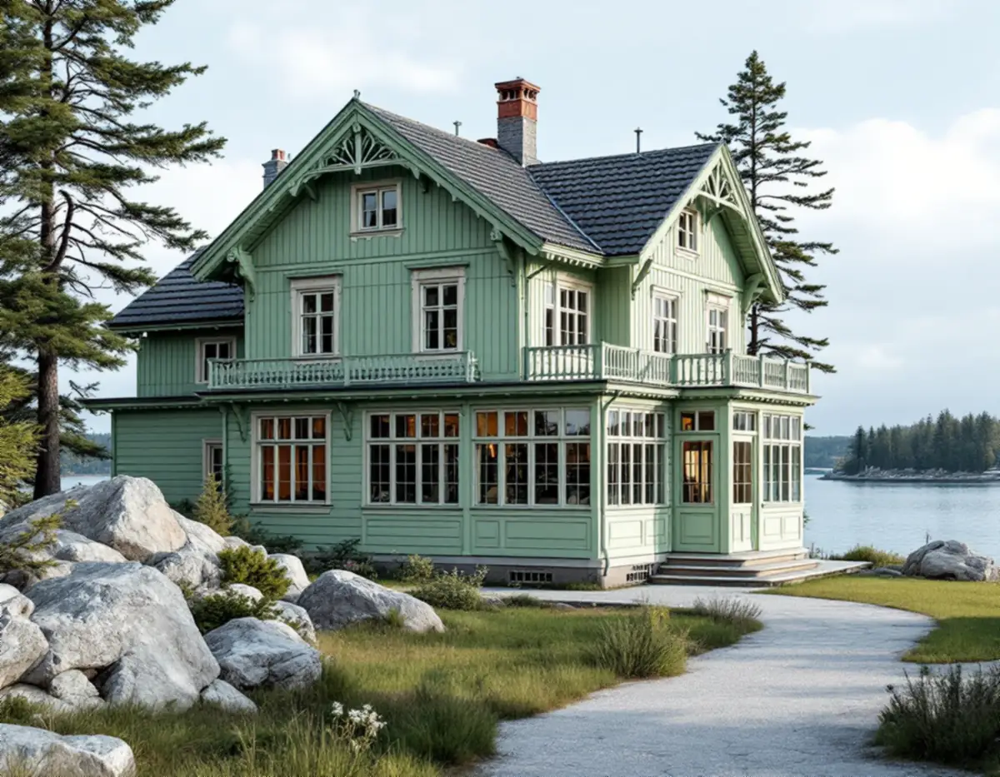
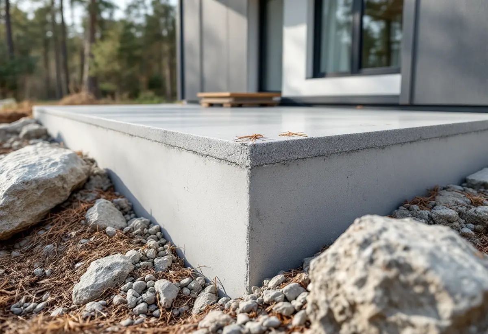

Strandskydd och plan
Vi kontrollerar strandskyddet, detaljplanen och kulturmiljölagret i webbkartan.
I Nacka ligger många villor nära vatten, och då räcker det inte att fråga om bygglov. Strandskyddet är en egen prövning, och kommunen påminner om att dispens kan behövas även när bygglov inte gör det. I villasamhällena längs Saltsjöbanan finns dessutom råd för hur husen ska byggas till. Geal Entreprenad AB bygger till villor i Nacka som total entreprenad och lämnar ett skriftligt kostnadsförslag efter ett gratis platsbesök.

Strandskyddet gäller normalt 100 meter från strandkanten, både på land och i vattnet, vid hav, sjöar och vattendrag. I Nacka har det utökats till 300 meter i flera delar av kommunen, bland annat Velamsund, södra delen av Järlasjö, Nyckelviken, delar av Insjön och Kil.
Inom strandskyddat område är det förbjudet att uppföra nya byggnader och att ändra byggnader eller sätta upp anordningar som avhåller allmänheten från att röra sig där. Kommunen skriver att bygglov och strandskyddsdispens är två skilda saker: även om du har fått bygglov kan dispens behövas, och tvärtom. Även när bygglov inte krävs behövs dispens, till exempel för en altan.
För att få dispens krävs ett särskilt skäl enligt 7 kap. 18 c–d § miljöbalken, till exempel att platsen redan är ianspråktagen så att den saknar betydelse för strandskyddets syften. Kommunen påpekar också att strandskyddet återinträder om en detaljplan där det varit upphävt ersätts av en ny plan.

Enligt kommunens checklista ska en situationsplan med tydliga mått och total area bifogas till varje ansökan om dispens. Ska du bygga eller bygga om en byggnad ska du också bifoga fasadritningar, helst i skala 1:100, och planritningar som är fackmässigt utförda. Kommunen har ett exempeldokument just för tillbyggnad av enbostadshus.
Miljöenheten och bygglovenheten samordnar sina beslut, och kommunen råder dig att kontakta bygglovenheten samtidigt som du söker dispens. Det är brottsligt att utföra en åtgärd som kräver dispens utan att ha fått den. Vi tar därför fram ritningarna så att de räcker till båda prövningarna.
Kulturmiljöprogrammet Villasamhällen vid järnvägen beskriver hur villasamhällen växte fram längs Saltsjöbanan från 1890-talet. Storängen grundades 1904 på enskilt initiativ och är riksintresse för kulturmiljövården. Föreningens byggnadsordning bestämde att villorna inte fick vara högre än två våningar, att avståndet till tomtgräns inte fick vara under sex meter och att grundytan fick vara högst en tiondel av tomten. Den vanliga tomtstorleken var 1 000–1 500 kvadratmeter, men många köpte två eller tre tomter.
För Storängen, Saltsjöbaden och Tattby ger programmet samma förhållningssätt: tillbyggnader ska underordnas huvudbyggnaden och få en placering, höjd, volym och utformning som anpassas till husets karaktär. Takkupor, terrasser, balkonger och altaner görs helst mot baksidan, och omfattande utfyllnader, stödmurar och hårdgjorda ytor undviks.
Programmet skriver också att möjligheten att bygga till beror på den enskilda byggnadens karaktär, dess roll i gatumiljön och dess arkitekturhistoriska värde, och att antikvarisk medverkan kan krävas inför bygglovsprövningen.
Utanför de särskilt värdefulla områdena kan mindre tillbyggnader oftast göras utan bygglov, skriver Nacka kommun, men krav på anmälan kan finnas kvar. Gränsen är 30 kvadratmeter sammanlagt, under taknocken, och 4,5 meter från gränsen om inte grannarna skriftligen har gått med på placeringen.
Inom ett område som är särskilt värdefullt enligt 8 kap. 13 § PBL ökar lovplikten. Kommunen hänvisar till kulturmiljölagret i webbkartan men påpekar att kartan håller på att uppdateras och inte är helt korrekt överallt. Är du osäker är det Stadsbyggnadsservice som kan svara. Hur den nya takdelen läggs mot det gamla taket beskriver vi under takrenovering i Nacka.
Vi kontrollerar strandskyddet, detaljplanen och kulturmiljölagret i webbkartan.
Huset, berget, avstånd till strand och gräns och takets höjder mäts upp.
Situationsplan, fasader och planer som håller för både dispens och bygglov.
Dispens, bygglov eller anmälan söks i rätt ordning innan bygget börjar.
Ett skriftligt förslag där grund, stomme, tak och installationer står var för sig.
Vi bygger med så lite markingrepp som möjligt och går igenom resultatet med dig.
Rotavdrag ges för tillbyggnad av ett småhus, enligt Skatteverket, om någon sida av tillbyggnaden sitter ihop med befintlig yttervägg till minst 75 procent eller om det finns en dörr emellan. Skatteverket godkänner också sprängarbete som krävs för en utbyggnad. Huset ska vara äldre än fem år.
Avdraget är 30 procent av arbetskostnaden, högst 50 000 kr per person och år, och vi gör det direkt på fakturan.
Berg och grundläggning, om strandskyddsdispens eller bygglov behöver sökas, om antikvarisk medverkan krävs, hur tillbyggnaden ansluts mot ett äldre tak och vilka installationer som ska in. Efter ett gratis platsbesök får du ett skriftligt kostnadsförslag.
Mer boyta i samma hus.
Tillbyggnad →Takbyte, takbesiktning och plåtarbeten.
Takläggare i Nacka →Saltsjöbaden, Boo och Älta.
Takrenovering i Nacka →Saltsjöbanan, kommunens mark och kulturkartan.
Attefallshus i Nacka →VA, LTA och dagvatten på tomten.
Byggföretag i Nacka →Uthus, räcken och plåt kring villan.
Fasadmålning i Nacka →Villasamhällena vid Saltsjöbanan.
Fönsterbyte i Nacka →Linoljefärg, väder och verkstad för villafönster.
Fönsterrenovering i Nacka →Slipa och olja trägolvet.
Golvslipning i Nacka →Farledens plåttak och Saltsjöbadens villor.
Plåtslagare i Nacka →Skorsten, huvar och genomföringar vid nytt tak.
Takbyte i Nacka →Ny tapet och dold dekor i äldre villor.
Tapetsering i Nacka →Villastäder, sommarhus och radhus.
Badrumsrenovering i Nacka →Sommarvillor, stugor och villor i Nacka.
Fasadrenovering i Nacka →Sommarvillor, stugor och hus med källarplan.
Golvläggare i Nacka →Radhuskök, sekelskiftesvillor och vedspis.
Köksrenovering i Nacka →Panelvillor och sommarnöjen i Nacka.
Målare i Nacka →Verandor, panel och altaner.
Snickare i Nacka →Nytt värmesystem när huset ändå görs om.
Totalrenovering i Nacka →